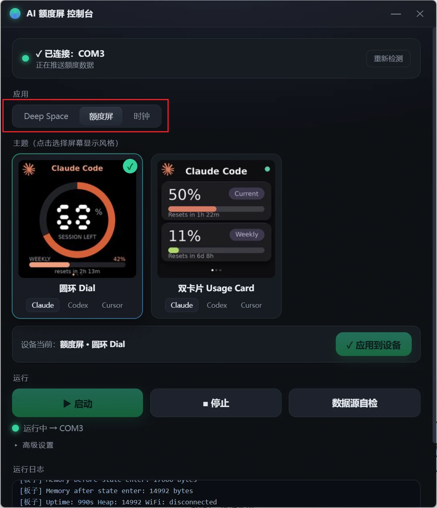

游戏与外设原型 · 2026
深空 · 游戏与 Haimian 外设
《深空》是一款通过对话影响剧情的太空游戏。Haimian 是配套的桌面小屏外设。
旋钮转一格时，焦点只在设备上移动；按下确认后，这个选择才进入游戏存档。把即时反馈留在本地，桌面小屏和网页就能共用一套剧情服务。
一份剧情状态，两个交互端
网页
- 浏览器读取存档标识
- 游戏服务返回最新轮次
- 网页视图消息与自由输入
外设
- WiFi 设备接口按同一标识取数
- 小屏固件呈现精简状态
- 旋钮与按键本地选中、提交回复
剧情
- 章节规划约束目标和选项
- 回合生成结合前情与回复
- 存档更新消息与资源
 放大查看 ↗
放大查看 ↗样机把阅读、选择和确认集中在屏幕、旋钮与按键三个部件上。
剧情引擎与双端存档
章节约束与异步回联
章节规划给出本章目标和选项；当轮叙述结合前情和本轮回复，生成消息并更新资源。章节结束后再提炼纪要和关键事实，供后续生成调用。
回合
- 章节规划目标 · 选项
- 本轮叙述前情＋玩家回复
- 保存结果消息 · 资源
等待
- 行动开始进入等待
- 后台生成预备行动结果
- 到时回联显示结果
记忆
- 章节结束汇总本章记录
- 异步提炼纪要 · 关键事实
- 后续生成注入前情
存档标识连接网页与外设
网页按存档标识读取最新轮次，外设通过 WiFi 向设备接口请求同一局的精简状态。游戏服务保存剧情进度，小屏只需处理阅读、选项和回联。
网页
- 浏览器读取存档标识
- 游戏服务获取最新轮次
- 网页交互输入或选项
外设
- WiFi 配网录入存档标识
- 设备接口获取精简状态
- 实体交互提交选项 · 轮询
叙事回合的数据
界面把 E-17 的来讯、建议回复和自由输入放在同一轮对话里。玩家回应成为下一轮叙述的输入；遇到耗时行动，结果会在等待结束后回联。
 放大查看 ↗
放大查看 ↗固件把输入和刷屏分开
输入状态与提交时机
旋钮的含义随页面变化：在选项区移动焦点，在历史区滚动阅读视口。可回复时短按才提交选项；长按进入配网。
按变化区域刷新显示
240 × 240 的 ST7789 分为状态栏、聊天视口和选项区。移动焦点只更新高亮，滚动只重绘视口，换页才整屏刷新。
ESP8266 把字形先写入 704 B 缓冲后批量送屏。两版固件同时调整了绘制、CPU 和 SPI 时钟，点按到本地画面的实测由约 570 ms 降至约 25 ms。
| 测量项 | 改造前 | 改造后 |
|---|---|---|
| 点按到本地画面 | 约 570 ms | 约 25 ms |
| CPU / SPI | 80 / 27 MHz | 160 / 40 MHz |
| 聊天区绘制 | 222–599 ms | 21.7 ms |
| 绘制 14 个汉字 | 21.5 ms | 7.9 ms |
实体结构与设备配置
前壳布局与试装
爆炸图给出屏幕、旋钮和确认键的相对位置。打印样件与装配照片对应到同一前壳，可以对照开孔和实际固定位置。
- 结构建模
- 打印试装
- 固定组件


USB 管配置，WiFi 接剧情
Windows 控制台用 USB 管理应用、主题和时间；游戏数据通过 WiFi 接入服务。两条连接分别承担设备配置和在线回合。

放大查看 ↗